| １ | ２ | ３ | ４ | ５ | ６ | ７ | ８ | ９ | |
| ワンズ | 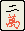 | 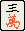 | 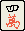 | 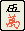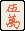 | 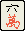 | 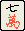 | 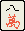 | 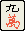 | |
| ピンズ | 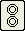 | 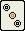 | 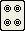 | 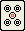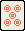 | 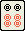 | 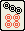 | 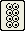 |  |
|
| ソウズ | 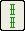 | 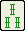 | 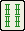 | 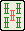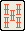 | 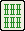 | 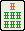 | 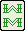 | 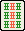 |
ネットマージャンのルールブックです。 麻雀を知らない人にも分るようにしたいと思っていますが、 まだ完全ではありません。 間違い、分かり難い所、曖昧な所がありましたら、 suz@d2.bs1.fc.nec.co.jp までメールでお願いします。
マージャンでは、３４種類の牌を４枚づつ、計１３６枚の牌を使います。
牌には、大きくわけて数牌と字牌があります。 数牌には、ワンズ、ピンズ、ソウズの３種類があり、 字牌には、風牌と三元牌があります。
ネットマージャンでは、赤ドラを採用しているので、 ５の牌には、普通の牌と赤色の牌の２種類があります。
| １ | ２ | ３ | ４ | ５ | ６ | ７ | ８ | ９ | |
| ワンズ | 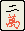 | 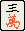 | 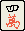 | 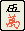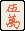 | 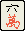 | 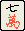 | 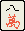 | 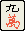 | |
| ピンズ | 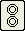 | 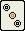 | 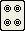 | 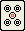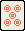 | 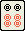 | 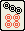 | 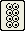 | |
|
| ソウズ | 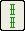 | 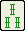 | 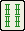 | 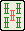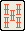 | 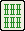 | 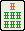 | 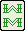 | 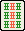 |
| 風牌（カゼハイ） |  |
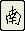 | 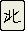 | |
| 三元牌（サンゲンパイ） | 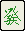 |
ヤオチュー牌とタンヤオ牌という別の分類もあります。 ヤオチュー牌は、１９牌および字牌のことで、 タンヤオ牌は、それ以外の牌のことです。
| ヤオチュー牌 |
|
| タンヤオ牌 | 〜 〜 〜 |
各牌の読み方は以下の通りです。
| イーワン | リャンワン | サンワン |
| スーワン | ウーワン | 赤ウーワン |
| ローワン | チーワン | パーワン |
| キューワン | イーピン | リャンピン |
| サンピン | スーピン | ウーピン |
| 赤ウーピン | ローピン | チーピン |
| パーピン | キューピン |
イーソウ |
| リャンソウ | サンソウ | スーソウ |
| ウーソウ | 赤ウーソウ | ローソウ |
| チーソウ | パーソウ | キューソウ |
| トン |
ナン | シャー |
| ペー | ハク | ハツ |
| チュン |
１つの雀頭と４つの面子を 揃えるとあがり形になります。 雀頭は、同じ牌２枚を揃えたもの（対子）です。 面子は、３枚の連続した数牌か、３枚の同一牌を揃えたものです。
| 雀頭 | 面子 | 面子 | 面子 | 面子 |
| ○ | |||
| × |
|
|
チー
順子は、手の中で作る以外にチーをして作ることができます。 上家が捨てた牌を加えれば、順子ができる場合、 その牌を持って来て、面子を作ります。 チーした面子は、他家に見えるように右に出します。（さらす）
チー ポン 明カンをしたら、 面子を他家に見せることになるので、 面前（メンゼン）ではなくなります。 面前でなくなると、リーチ、 イイペイコウ 等さまざまな役の権利がなくなります。 |
| ○ |
|
||
| × |
|
ポン
同じ牌を２枚持っているときに、その牌が捨てられた場合 その牌を持って来て、刻子を作ります。 ポンした面子は、次のようにさらします。 ポンは、誰が捨てた牌でもできます。
|
|
暗槓（アンカン） 同じ牌を４枚持っていたとき、カンをして次のように面子をさらします。
または
|
|
明槓（ミンカン） 同じ牌を３枚持っているときに、その牌が捨てられた場合 その牌を持って来て、槓子を作ります。 カンした面子は、次のようにさらします。 カンは、誰が捨てた牌でもできます。
|
|
加槓（カカン） ポンしたメンツと同じ牌を持っているとき、 カンをして次のように面子をさらします。
|
両面待ち
待ち牌:ペンチャン待ち
待ち牌:カンチャン待ち
待ち牌:単騎待ち
待ち牌:シャボ待ち
待ち牌:
手の形によっては、待ちが複合することがありますが、 あがったときには、上記のどれかに決める必要があります。
【例】
△ △
△ △
待ち牌:
△
△ △
待ち牌:
△ △ △ △
△ △ △ △
△ △ △ △
△ △ △ △
△ △ △ △
△ △ △ △
△ △ △ △
△ △ △ △
△ △ △ △
△ △ △ △
待ち牌:
牌山から取ってきた（ツモってきた）牌が待ち牌であがり形になり 役が１つ以上あれば、ツモと発声しあがりを宣言することができます。
この場合のあがりをツモあがりといいます。
他家が自分の待ち牌を河に捨てた場合、次の条件を満たせば ロンと発声しあがりを宣言することができます。
この場合のあがりをロンあがりといい、ロンあがりされる牌を切ることを 放縦といいます。
ロンあがりの場合、放縦した人（放縦者）が一人で点数を払います。
複数の人が、ロンあがりすることがあります。 ３人がロンあがりする場合は、三家和といって、流局になります。
２人がロンあがりする場合は、通常放縦者の 下家、 対面、 上家の順に優先されます。（頭ハネ）。 ネットマージャンでは、２人ともあがれますが、頭ハネされた人は、 あがりの点数を貰うことはできますが、 リーチ棒や 積み棒、連荘の権利は ありません。
下の図のようなテーブル（卓）で４人で対戦します。
自分の席の左側の人のことを上家（カミチャ） 自分の席の右側の人のことを下家（シモチャ） 自分の席の向かいの人のことを対面（トイメン） といいます。 自分のことを自家（ジチャ）、 自分以外を他家（タチャ）ということもあります。
ネットマージャンでは、半荘毎にサイコロで席を決めます。
各人２５０００点の点棒を持って半荘というゲームの単位を行い、 半荘終了時に一番点棒を持っている人が勝ちになります。 半荘の途中でも誰かの点棒が０点未満になったらゲームが終了します（ブットビ）。
| 対面 | |||
| 牌山 | ドラ表示牌 | ||
| 上家 | 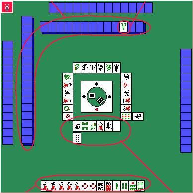 | 下家 | |
| 手牌 | 河（ホウ） | ||
| 自家 | |||
半荘に、東場／南場の２つの場を行います（東南戦）。 東場のみで半荘を終えるルールもあります（東風戦）。
ネットマージャンでは、東風戦がデフォルトになっていますが、 東南戦も選択できます。
各場で、親を交替しながら局を行います。
親のことを東家といい、
が自分の風牌（自風牌）になります。
親以外は全て子で、時計と逆回りに南家、西家、北家になります。
それぞれの風牌は、
になります。
また、場にも風牌（場風牌）があります。
東場の風牌は、
南場の風牌は、 です。
東場の東家にとって、は、ダブ東です。
同様に、南場の南家にとって、は、ダブ南です。
ダブ東／ダブ南は、翻牌という役や
雀頭の符計算時に扱いが違います。
自風牌でも場風牌でもない風牌をオタ風牌といいます。
最初に親をする人を起家（チーチャ）といい、サイコロによって決めます。
| 東場 | 南場 | ||||||
| 東１局 | 東２局 | 東３局 | 東ラス | 南１局 | 南２局 | ラス前 | オーラス |
| 東家 | 北家 | 西家 | 南家 | 東家 | 北家 | 西家 | 南家 |
| 南家 | 東家 | 北家 | 西家 | 南家 | 東家 | 北家 | 西家 |
| 西家 | 南家 | 東家 | 北家 | 西家 | 南家 | 東家 | 北家 |
| 北家 | 西家 | 南家 | 東家 | 北家 | 西家 | 南家 | 東家 |
局は次のように行います。
まず、すべての牌を各自裏返しに２段にして積みます。 全部で１３６枚あるので、各自の担当は、３４枚（１７トン）です。
積んだ牌を牌山といい、 そこから各人が、１３枚づつ手牌を取ります。手牌は他家に見えないように 立てて置きます。 （親は、最初にツモる分を含めて１４枚の配牌を取ります。） （どこからどのように手牌を取り出すかはここでは説明しません。） 最初の手牌を配牌といいます。
この時にドラ表示牌もめくります。
牌山から一枚牌を取り（ツモり）、卓に表向けに一枚牌を捨てる ことを親から順番に時計と逆回りに繰り返します。 捨てた牌は捨てた順に並べますが、これを河（ホウ）といいます。
誰かがあがるか、１４枚を残し牌山をすべて取ると局が終了します。 残した最後の１４枚を王牌（ワンパイ）といいます。
親があがった場合、親を続けることができます。 親を続けることを連荘（レンチャン）といいます。 親を続ける場合は、１００点棒を卓に置き、連荘を示します （積み棒）。
親以外の人があがった場合、南家が新しい親になります。 このときは、積み棒をなくします。
テンパイ者の人数 ノーテン者 テンパイ者 ４人 ０ ０ ３人 ー３０００ ＋１０００ ２人 ー１５００ ＋１５００ １人 ー１０００ ＋３０００ ０人 ０ ０
親がテンパイの場合、連荘になりますが、ノーテンの場合 南家が親になります。 どちらの場合にも積み棒を増やします。
供託されたリーチ棒は、積み棒のところに置き次にあがった人が貰えます。
このときはノーテン罰符はありません。
親は、連荘できず、南家が親になります。 この場合にも積み棒を増やします。
供託されたリーチ棒は、積み棒のところに置き次にあがった人が貰えます。
一人で４つのカンをした時は、例外で流局になりません。 また５つ目のカンはできません。
このときはノーテン罰符はありません。
親は、連荘できず、南家が親になります。 この場合にも積み棒を増やします。
供託されたリーチ棒は、積み棒のところに置き次にあがった人が貰えます。
このときはノーテン罰符はありません。
親は、連荘できず、南家が親になります。 この場合にも積み棒を増やします。
供託されたリーチ棒は、積み棒のところに置き次にあがった人が貰えます。
あがれない時にあがりを宣言してしまった （誤ツモ、誤ロン） とき、 チョンボとなり、罰符を払うことになります。
この時の罰符は、満貫をツモあがりしたときの点数とちょうど逆になります。 （満貫払い）
局はなかったことになり、やりなおします。 チョンボがあった局のリーチ棒は、リーチをかけた人に返されます。
他の人がロンあがりしたときに誤ロンした場合は、チョンボにはなりません。 （あがり優先）
あがるためには、最低でも１つの役が必要です。 あがったとき、役とドラの翻数の合計 と符からあがり点が決まります。 親は、子の１.５倍の点数になります。
ロンあがりの場合は、あがり点の１００点以下の端数を 切り上げた点数に、３００点×積み棒を加算した点数を 放縦者から貰えます。
子がツモあがりした場合は、 あがり点の１００点以下の端数を 切り上げた点数の１／２に１００点以下の端数をさらに切り上げた 点数に、１００点×積み棒を加算した点数を親から貰えます。 子からは、１／４に１００点以下の端数をさらに切り上げた 点数に、１００点×積み棒を加算した点数を貰えます。
親がツモあがりした場合は、あがり点の１００点以下の端数を 切り上げた点数の１／３に１００点以下の端数をさらに切り上げた 点数に、１００点×積み棒を加算した点数を子から貰えます。
４翻以下の場合次の計算式であがり点を決めます。
子の場合
４ × 符 × （２**翻数） × ４ 親の場合
６ × 符 × （２**翻数） × ４ 注1） ２０符１翻は、３０符１翻として計算します。
注2） ３０符４翻は、満貫とするルールが一般的ですが、 ネットマージャンでは採用していません。
子（ロンあがりの場合）
| 翻数 | 20符 | 30符 | 40符 | 50符 | 60符 | 70符 | 80符 |
| １翻 | → | 1000 | 1300 | 1600 | 2000 | 2300 | 2600 |
| ２翻 | 1300 | 2000 | 2600 | 3200 | 3900 | 4500 | 5200 |
| ３翻 | 2600 | 3900 | 5200 | 6400 | 7700 | 満貫 | 満貫 |
| ４翻 | 5200 | 7700 | 満貫 | 満貫 | 満貫 | 満貫 | 満貫 |
親（ロンあがりの場合）
| 翻数 | 20符 | 30符 | 40符 | 50符 | 60符 | 70符 | 80符 |
| １翻 | → | 1500 | 2000 | 2400 | 2900 | 3400 | 3900 |
| ２翻 | 2000 | 2900 | 3900 | 4800 | 5800 | 6800 | 7700 |
| ３翻 | 3900 | 5800 | 7700 | 9600 | 11600 | 満貫 | 満貫 |
| ４翻 | 7700 | 11600 | 満貫 | 満貫 | 満貫 | 満貫 | 満貫 |
５翻以上は、次の通りです。
| 合計翻数 | 通称 | 点数（親／子） |
| ５翻 | 満貫 | 12000/8000 |
| ６翻〜７翻 | ハネ満 | 18000/12000 |
| ８翻〜１０翻 | 倍満 | 24000/16000 |
| １１翻〜１２翻 | ３倍満 | 36000/24000 |
| １３翻〜 | ４倍満 | 48000/32000 |
役満は最高点の役であり、あがり点は ４倍満です。
注） ネットマージャンでは、役満同士の複合を認めています （ダブル役満あり）。
符は次のように計算します。
基本符 ２０ に 雀頭、面子、待ち、あがり方についての符を加算し、 最後に１０以下を切り上げる。
ダブ東、ダブ南 ４ 三元牌、 自風牌、 場風牌 ２ オタ風牌、 数牌 ０
順子 ０ タンヤオ牌 ヤオチュウ牌 明刻子 ２ ４ 暗刻子 ４ ８ 明槓子 ８ １６ 暗槓子 １６ ３２
両面待ち ０ ペンチャン待ち ２ カンチャン待ち ２ 単騎待ち ２ シャボ待ち ０
面前 面前でない ツモあがり ２ ２ ロンあがり １０ ０
【例】
| カン | カン | |
|
|
| カン | ツモ |
基本符２０
＋雀頭０
＋暗刻子４＋明槓子１６＋明槓子８＋暗槓子３２
＋シャボ待ち０
＋ツモ２
＝８２（切り上げて９０符）
七対子は、 １雀頭４面子の形でないため、符計算は特殊で ２５符固定になります。
すくなくとも１つの役がなければ、あがることができません。 麻雀には、以下のようにたくさんの役があります。
面前（メンゼン）でツモあがったとき１翻となります。
【例】
| ツモ | |
|
|
手を変えないことと、 千点を卓に置きあがった人への懸賞とする（供託する）ことを 条件にリーチを宣言することができます。 リーチをしてあがったとき１翻となります。 また、裏ドラを乗せる権利がつきます。 リーチの宣言の方法は以下の通りです。
【例】
| リーチ |
|
| ロン | |
|
|
リーチをかけて次の条件であがると、１翻となります。
三元牌、 場風牌、 自風牌を 刻子 にすると１翻となります。 場風牌と自風牌が重なっている場合は、２翻となります。
【例】
| ポン | ツモ | |
面前で 符がつかないと１翻となります。 符がつかない条件は以下の通りです。
【注】
ツモあがりの場合は
ツモ符がつくのでピンフはつかないのが正統ですが、
ネットマージャンでは、
平和のテンパイ形でツモあがりした場合は、特別にツモ符
がつかないことにしています。
【例】
| ロン | |
ヤオチュー牌を使わずに タンヤオ牌だけの手をあがると１翻となります。
【例】
| チー | ロン | |
| 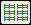 |
【例】
| ツモ | |
牌山の最後の牌で ツモあがると１翻となります。 河に最後に捨てられた牌でロンあがると１翻となります。
加カンをされた牌が待ち牌のとき、 ロンあがりをすることができ１翻となります。
カンをしたとき、 王牌からとってきた補充牌があがり牌のとき、１翻となります。
次の条件でリーチをしたとき、 リーチの１翻と併せて ２翻となります。
４つの面子が 刻子または 槓子 のみの手をあがれば、２翻となります。
【例】
| ポン | ポン | ツモ | |
|
|
【例】
| ツモ | |
同一数の刻子を３種の数牌で作りあがると、２翻となります。
【例】
| ポン | ポン | ツモ | |
|
|
三元牌で １雀頭と ２つの面子を作りあがると、２翻となります。
【例】
| ポン | チー | ツモ | |
|
|
１または９または字牌の雀頭と １または９を含む面子か字牌の面子だけの手をあがると２翻になります。 面前でない場合は１翻です。
【例】
| チー | チー | ロン | |
ヤオキュー牌だけの手をあがると２翻となります。
【例】
| ポン | ポン | ロン | |
３つカンをした手をあがると２翻となります。
【例】
| カン | カン | |
|
|
| カン | ツモ |
同じ数の順子を３種類の数牌で作ると２翻となります。 面前でない場合１翻です。
【例】
| チー | チー | ロン | |
同一種の数牌で１２３４５６７８９の形を作りあがると、 ２翻となります。面前でない場合は１翻です。
【例】
| ロン | |
イイペイコウを２つ作ると、イイペイコウ×２の２翻と併せて３翻となります。 当然ながら面前の必要があります。
【例】
| ツモ | |
同一種類の数牌か字牌だけの手をあがると３翻になります。 面前でない場合は、２翻になります。
【例】
| ポン | ツモ | |
１または９の雀頭と１または９を含む面子のみの手をあがると３翻になります。 面前でない場合は、２翻となります。
【例】
| チー | チー | ロン | |
|
|
同一種類の数牌だけの手をあがると６翻になります。 面前でない場合は、５翻になります。
【例】
| ポン | ロン | |
|
|
対子を７種揃えると２翻役になります。
【注】
同一牌を４枚使った形は認められません。
また、七対子は、リャンペーコー
と複合しません。
【例】
| ロン | |
|
|
最後まで誰もあがらなかった場合、 ヤオチュウ牌のみを捨てていて どの牌も チー ポン カン されていないと、 満貫のツモあがりの扱いになります。
１３種類全てのヤオチュー牌 とそのうちのどれかの牌を１枚使った手は、 国士無双という役満になります。
国士無双に限り、 あがり牌を暗カンされた場合でも ロンあがりをすることができます。
【例】
| ロン | |
|
|
【例】
| ツモ | |
【例】
| ポン | チー | ツモ | |
|
|
緑色の牌（ ）だけの手をあがると役満になります。
【例】
| ポン | ツモ | |
字牌だけの手をあがると役満になります。
【例】
| ポン | ポン | ツモ | |
|
|
|
【例】
| ポン | ポン | ツモ | |
|
|
【例】
| ポン | ポン | ツモ | |
|
|
４つカンをした手をあがると役満になります。 必然的に単騎待ちになります。
【例】
| カン | カン | カン | |
|
|
| カン | ツモ |
【例】
| ポン | ポン | ロン | |
|
|
面前で、 １１１２３４５６７８９９９にあと１枚加えた形の 清一をあがると 役満になります。 特に１１１２３４５６７８９９９の形のテンパイは、９面待ちで 純正九連宝燈と呼ばれています。
【例】
| ロン | |
親が配牌であがった場合、役満となります。
子の第一ツモで ツモあがり 、それまでに チー ポン カン が入らなかった場合、 役満となります。
子が配牌でテンパっていて、 第一ツモまでに チー ポン カン が入らず、かつ待ち牌が出た場合、 ロンあがりすることができます。 人和は、純粋な役満扱いではなく、倍満になります。
役に準ずるものに次のドラがあります。 これらは、あがるための条件を満たすものではありませんが、 あがったときの点数に関係あります。
牌山の最後から３トン目をめくり、 ドラ表示牌とします。 ドラ表示牌のネクスト牌がドラです。 あがったとき手牌で使っているドラの枚数だけ翻数が増えます。
| → → → → → → → → → |
|
→
→
→
→
→
→
→
→
→
|
| → → → → → → → → → |
| → → → |
|
→
→
→
→
|
カンドラ表示牌のネクスト牌がカンドラです。
あがったとき手牌で使っているカンドラの枚数だけ翻数が増えます。
ネットマージャンでは、 赤ドラ（ ）を一枚づつ使っています。
あがったとき、 手牌に使っている赤ドラ の枚数だけ翻数が増えます。
ネットマージャンでは役とは別にチップというボーナスがあります。 チップは、一枚５０００点相当になります。
リーチをかけてあがった場合、 ツモあがりの場合全員からウラドラの枚数づつ、 ロンあがりの場合放縦者からウラドラの枚数だけ、 チップをもらうことができます。
ツモあがりの場合全員から 赤ドラ（ ）の枚数づつ、 ロンあがりの場合放縦者から 赤ドラの枚数だけ、 チップをもらうことができます。
さらにオールスターがあるルールでは、３つの赤ドラを揃えた場合、 ツモあがりの場合全員から２枚づつ、 ロンあがりの場合放縦者から２枚だけ、 チップを余分にもらうことができます。
一発であがった場合、 ツモあがりの場合全員から１枚づつ、 ロンあがりの場合放縦者から１枚だけ、 チップをもらうことができます。
役満をあがった場合、 ツモあがりの場合全員から２枚づつ、 ロンあがりの場合放縦者から３枚だけ、 チップをもらうことができます。
ネットマージャンでは、食い替えに関する制限はありません。
ネットマージャンでは、包をなくしました。
明槓されて リンシャンカイホウされた場合も 責任払いにはならず、 ツモあがり になります。
ネットマージャンでは、４人リーチでは流局しません。
鈴木康司 （suz@d2.bs1.fc.nec.co.jp）